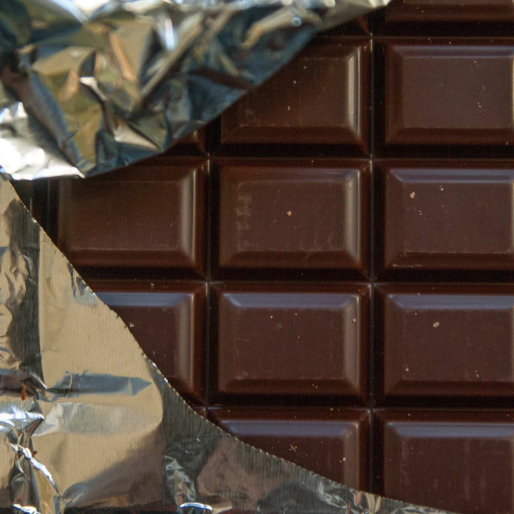

Petite présentation
La tortue d'Hermann est un animal essentiellement herbivore, c'est-à-dire qu'elle mange essentiellement des végétaux et des fruits.
Pour maintenir en bonne santé votre tortue, il faudra lui apporter une alimentation variée et équilibrée. En effet, chaque végétal offre un apport nutritif différent à l'animal. Effectivement, certains aliments offriront plus de calcium, plus de phosphores et plus de Vitamine A que d'autres. Une mauvaise gestion de l'alimentation peut entrainer des carences ou des maladies pouvant être fatales pour votre tortue.
Pour bien gérer la nutrition de votre tortue, il est préconisé de donner 90% de végétaux pour 10% de fruits. Surtout, n'abusez pas des fruits! Votre tortue en raffole mais ces-derniers ont un apport peu intéressant pour elle. Pour compléter, vous pouvez lui donner en petite quantité des granulés industriels, ces-derniers faciliteront la prise de médicaments en poudre si votre tortue venez à tomber malade.Par ailleurs, pour être sûr que votre tortue n'ait aucun manque de calcium nécessaire à sa carapace, mettez-lui à sa disposition des os de seiches.( Lot d'os de seiche -- https://amzn.to/3650TPx).
L'alimentation est aussi un facteur dans la prévention contre certains troubles comme la digestion , l'appétit ou petites infections. Pour éviter ceci, il est possible de donner certaines plantes aux pouvoirs médicinaux pour ces animaux. Par exemple, le pissenlit est bon pour la digestion, le plantain a des effets antibiotiques et l'armoise à des bienfaits contre le rhume.
Par ailleurs, si vous constatez que votre tortue a mangé un vers de terre ou un escargot ce n'est pas grave car ce type d'aliment est un apport en protéines.
Cependant, un abus de ces aliments peut être problématique car ces derniers remplissent l'estomac de votre tortue or ils n'offrent pas tous les éléments nutritifs nécessaires à la bonne santé de cette dernière.
La nourriture
Bon au quotidien :
- Epinard, trèfle, plantain, endive, mâche, cresson, chicorée frisée, blettes, romaine
- Rutabaga
- Mauve, liseron, sédum, chicorée, luzerne
- feuilles : feuilles de navet, feuilles de radis, feuilles de chou frisé, feuilles de brocoli, feuilles de mûrier et de ronces, feuilles de betterave, feuilles de brocoli, feuilles d'ortie
- fleurs : fleurs de bigogne, fleurs de rose trémière, fleurs de muflier, fleurs de capucine
- Fleurs et feuilles : fleurs et feuilles d'althéa, fleurs et feuilles de Pissenlit, feuilles et fleurs d'ipomée
- figue fraîche, figue de barbarie
De temps en temps:
- Salade romaine
- fraises, framboise, mûres, groseille, myrtille
- tomate
- pomme, poire, melon, raisin, banane, mandarine, kiwi
- courge, courgette
- vers de terre
- vert de poireau
- mangue, papaye, germe de soja, ananas, pastèque

Interdit :
- Pain trempé dans du lait
- pâtes, riz
- lait, yaourt, fromage
- chocolat, gâteaux
- viandes, poisson, fruits de mer, croquettes pour chien
- champignon
- chou-fleur, artichaut, choux de Bruxelles
- maïs
- laitue, petits pois, lentilles
- ail, oignon
- pommes de terre
Les produits que nous utilisons
Graines de plantes idéales à semer : Sachet de graines à faire germer pour Tortues -- https://amzn.to/364HxtQ
Les granulés : Komodo -- https://amzn.to/3bHLru1